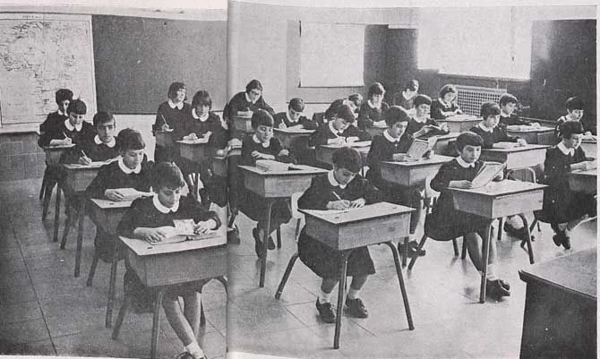
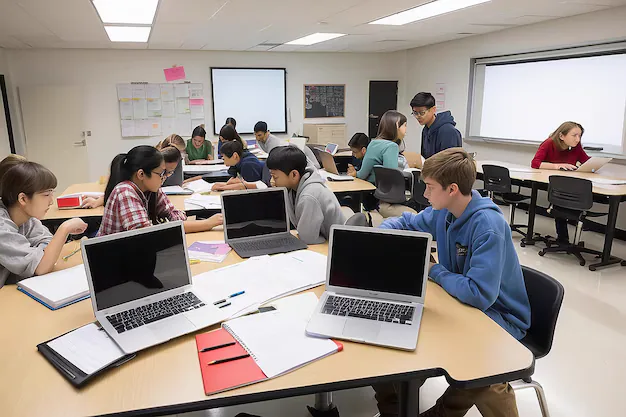
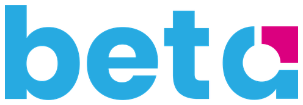
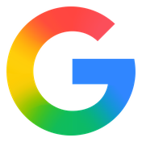

Programa de Transformación Digital · Ciclo 2026–2027
«Maestros como los de sus hijos.»
En alianza con activa
Nadie perdió su trabajo por hacerlo mal. Cambió la herramienta, no las ganas de trabajar.
A nosotros nos pasó una vez. A nuestros hijos les va a pasar varias veces, y mucho más rápido.
Tener miedo es razonable. Nosotros también lo tenemos.
Pero el miedo nunca decidió lo que pasó después. Lo decidimos nosotros.
Y hoy lo único que está en nuestras manos es si nuestros hijos lo enfrentan solos o acompañados.


Este modelo funcionó, y funcionó bien: formó a los profesionistas que hoy están en esta sala. Fue diseñado para un mundo donde el trabajo era predecible. Ese mundo cambió.
Seis de cada diez niños que hoy entran a la escuela.
Es una proyección sobre el futuro del trabajo, no una medición: los empleos que aún no se inventan no se pueden contar.
Proyección difundida por The Economist sobre el futuro del empleo.
7 de estas 10 competencias no son tecnológicas. La tecnología es el medio; lo que se forma es la persona.
Distinguir una fuente seria de una que no lo es, y citar de dónde salió lo que usa.
Cuidar sus datos y su privacidad, y usar la inteligencia artificial como apoyo y no como atajo.
Saber que puede decir que no, pedir que borren algo y avisar cuando algo no está bien.
Que lo que escribe le llega a alguien, y que convivir en línea también se aprende.
Cuando su hijo busque su primer trabajo, la empresa va a mirar su perfil antes de la entrevista. Lo que publica a los 12 sigue ahí a los 22. Por eso se enseña ahora, y no cuando ya importa.
Capacitación continua en las herramientas de Google for Education y en el resto del ecosistema, con un coach certificado asignado al colegio. No es un curso de una tarde: es un acompañamiento que dura todo el ciclo.
La tecnología le quita el papeleo. Le devuelve el tiempo para atender a su hijo.
| Nivel | Cómo se usa el dispositivo |
|---|---|
| Primaria | En actividades concretas, con supervisión constante |
| Secundaria | Regular, con autonomía creciente y acompañamiento |
| Bachillerato | Autónomo, orientado a productividad y proyectos |
Una pregunta para llevarse a casa: ¿cuántas horas pasa su hijo frente a una pantalla sin que nadie lo acompañe? Aquí, cada minuto tiene un maestro detrás.
El monitoreo lo realiza únicamente personal autorizado del colegio, bajo un protocolo establecido.
Lo diseñan y lo guían psicólogos educativos certificados, de principio a fin. El maestro no está solo: tiene un equipo profesional detrás.
Empezamos con un Mapeo de habilidades socioemocionales.
Aprender a sentir: inteligencia emocional y autoconocimiento.
Resiliencia, juicio crítico y decisiones con criterio propio.
Proyección vocacional y competencias de futuro.
Un contenido distinto en cada etapa: no se trabaja igual con un niño de siete años que con un joven que elige carrera.
Es un programa educativo: acompaña, desarrolla y da seguimiento. No sustituye una atención clínica.
Aprendizaje Basado en Proyectos
STEAM e indagación
Aprendizaje Basado en Problemas
Aprendizaje Servicio
Midieron el consumo de agua del colegio, diseñaron una campaña de ahorro y se la presentaron a la dirección.
Mapearon los cruces peligrosos del camino a la escuela, levantaron datos de tráfico y llevaron una propuesta de señalización al municipio.
No consumen contenido. Lo crean: presentaciones, videos, mapas y campañas hechos por ellos.
Dos ejemplos del tipo de proyecto que plantea el programa.

El Marco Común Europeo describe la progresión del programa. Cambridge, IELTS y TOEFL se presentan como ruta de certificación.

Egresan con una certificación oficial que pueden incluir en su solicitud universitaria y en su primer currículum.
Universidades que trabajan sobre el mismo ecosistema.
Este camino se recorre juntos: colegio, maestros y familias.
El espacio es ahora para sus preguntas.